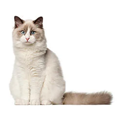
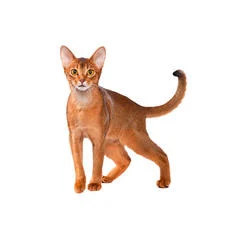
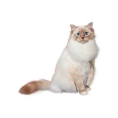

|
Image
|
Breed
|
Description
|

|
Siamese Cat |
Social, intelligent, and vocal cats. They love the company of others and make very good playmates with other cats, dogs, and children. They are active and curious, but they also love cuddling with their owners. |

|
Britsh Shorthair |
A very easygoing feline that loves affection. They do not like being carried and do not rest on your lap. However, they do like staying next to their owner. |

|
Maine Coon Cat |
They make for good companions due to their gentle and friendly personality. Maine Coon Cats are playful and curious. |

|
Persian Cat |
Persian Cats prefer calm and relaxing environments. They tend to watch from afar, and are independent creatures. |
|

|
Ragdoll Cat |
These are cats that show their affection through greetings and playful behavior. Ragdoll Cats are very affectionate. |

|
Sphynx Cat |
Hairless, muscular, and with broad ears and large eyes. They carry a friendly expression and are affectionate. |

|
American Shorthair Cat |
These cats posses hunting skills that are used to keep rodents and vermin at bay. A smart, and somewhat outgoing cat that loves to learn tricks. |
|

|
Abyssinian Cat |
Abyssinians are smart and inquisitive. They love to go around exploring and have the tendency to take things that pique their interest. The Abyssinians have a playful nature so they love to jump and climb. |

|
Burmese Cat |
Similar to Siamese Cats, Burmese Cats love companionship and conversation. They have more gentle voices. |
|

|
Birman Cat |
The Birman Cat comes from an exotic ancestry.They have beautiful pointed coats, white paws, and blue eyes. They carry with them an incredible charisma. |